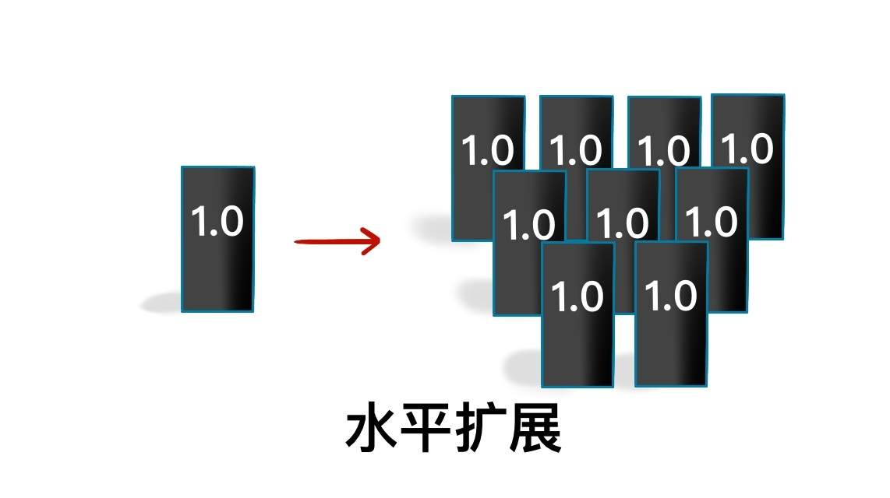
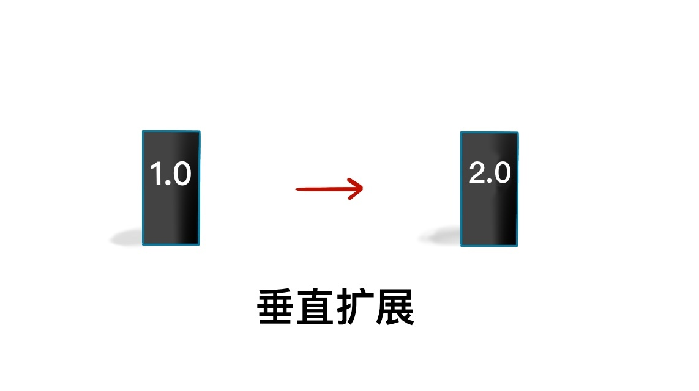

- 00 开篇词 从这里开始，带你走上硅谷一线系统架构师之路.md.html
- 01 为什么MapReduce会被硅谷一线公司淘汰？.md.html
- 02 MapReduce后谁主沉浮：怎样设计下一代数据处理技术？.md.html
- 03 大规模数据处理初体验：怎样实现大型电商热销榜？.md.html
- 04 分布式系统（上）：学会用服务等级协议SLA来评估你的系统.md.html
- 05 分布式系统（下）：架构师不得不知的三大指标.md.html
- 06 如何区分批处理还是流处理？.md.html
- 07 Workflow设计模式：让你在大规模数据世界中君临天下.md.html
- 08 发布_订阅模式：流处理架构中的瑞士军刀.md.html
- 09 CAP定理：三选二，架构师必须学会的取舍.md.html
- 10 Lambda架构：Twitter亿级实时数据分析架构背后的倚天剑.md.html
- 11 Kappa架构：利用Kafka锻造的屠龙刀.md.html
- 12 我们为什么需要Spark？.md.html
- 13 弹性分布式数据集：Spark大厦的地基（上）.md.html
- 14 弹性分布式数据集：Spark大厦的地基（下）.md.html
- 15 Spark SQL：Spark数据查询的利器.md.html
- 16 Spark Streaming：Spark的实时流计算API.md.html
- 17 Structured Streaming：如何用DataFrame API进行实时数据分析_.md.html
- 18 Word Count：从零开始运行你的第一个Spark应用.md.html
- 19 综合案例实战：处理加州房屋信息，构建线性回归模型.md.html
- 20 流处理案例实战：分析纽约市出租车载客信息.md.html
- 21 深入对比Spark与Flink：帮你系统设计两开花.md.html
- 22 Apache Beam的前世今生.md.html
- 23 站在Google的肩膀上学习Beam编程模型.md.html
- 24 PCollection：为什么Beam要如此抽象封装数据？.md.html
- 25 Transform：Beam数据转换操作的抽象方法.md.html
- 26 Pipeline：Beam如何抽象多步骤的数据流水线？.md.html
- 27 Pipeline I_O_ Beam数据中转的设计模式.md.html
- 28 如何设计创建好一个Beam Pipeline？.md.html
- 29 如何测试Beam Pipeline？.md.html
- 30 Apache Beam实战冲刺：Beam如何run everywhere_.md.html
- 31 WordCount Beam Pipeline实战.md.html
- 32 Beam Window：打通流处理的任督二脉.md.html
- 33 横看成岭侧成峰：再战Streaming WordCount.md.html
- 34 Amazon热销榜Beam Pipeline实战.md.html
- 35 Facebook游戏实时流处理Beam Pipeline实战（上）.md.html
- 36 Facebook游戏实时流处理Beam Pipeline实战（下）.md.html
- 37 5G时代，如何处理超大规模物联网数据.md.html
- 38 大规模数据处理在深度学习中如何应用？.md.html
- 39 从SQL到Streaming SQL：突破静态数据查询的次元.md.html
- 40 大规模数据处理未来之路.md.html
- FAQ第一期 学习大规模数据处理需要什么基础？.md.html
- FAQ第三期 Apache Beam基础答疑.md.html
- FAQ第二期 Spark案例实战答疑.md.html
- 加油站 Practice makes perfect！.md.html
- 结束语 世间所有的相遇，都是久别重逢.md.html
- 捐赠
05 分布式系统（下）：架构师不得不知的三大指标
你好，我是蔡元楠。
上一讲中，我们学习了如何用服务等级协议（SLA）来评估我们设计的分布式系统，并了解了几个常见的SLA指标。
今天我们继续来探索分布式系统的另外几个重要基础概念。
可扩展性
还是从我们为什么需要分布式系统讲起。原因是我们要面对的数据量越来越大，从GB到TB再到现在的PB级，单机无法胜任这样的工作。
工作中也常有这样的场景，随着业务变得越来越复杂，之前设计的系统无法处理日渐增长的负载。这时，我们就需要增加系统的容量。
分布式系统的核心就是可扩展性（Scalability）。
最基本而且最流行的增加系统容量的模型有两种: 水平扩展（Horizontal Scaling）和垂直扩展（Vertical Scaling）。
所谓水平扩展，就是指在现有的系统中增加新的机器节点。

垂直扩展就是在不改变系统中机器数量的情况下，“升级”现有机器的性能，比如增加机器的内存。

举个例子，假设你现在负责一批木材采伐的操作。你有3辆卡车，每辆车一次可以运25根木材。那么1小时最多可以运3辆卡车 * 25根木材 * 1小时=75根木材／小时。
如果要使这个系统的负荷量增加一倍，用水平扩展的办法，我们可以将卡车的数量增加到6辆；用垂直扩展的办法，我们可以使每辆卡车的运输量增加一倍，或者使每辆卡车的速度增加一倍。
你是不是已经发现了，水平扩展的适用范围更广，操作起来更简单，并且会提升系统的可用性（Availability）。
如果你的系统部署在AWS或者其他主流的云服务上，你只需要点几个按钮，就可以在现有的机器集群中增加一个新的节点。
但是，无节制地增加机器数量也会带来一些问题，比如机器的管理、调度、通信会变得更加复杂，出错的可能性会更高，更难保证数据的一致性等等。
与之相反，垂直扩展并没有让整个系统变得更加复杂，控制系统的代码也不需要做任何调整，但是它受到的限制比较多。多数情况下，单个机器的性能提升是有限的。而且受制于摩尔定律，提高机器的性能往往比购买新的机器更加昂贵。
所以在工作中，我们要对这两种模式进行取舍，要具体情况具体分析。
同样地，在大数据的时代，数据增长速度越来越快，数据规模越来越大，对数据存储系统的扩展性要求也越来越高。
传统的关系型数据库因为表与表之间的数据有关联，经常要进行Join操作，所有数据要存放在单机系统中，很难支持水平扩展。而NoSQL型的数据库天生支持水平扩展，所以这类存储系统的应用越来越广，如BigTable、MongoDB和Redis等。
一致性
可用性对于任何分布式系统都很重要。一般来说，构成分布式系统的机器节点的可用性要低于系统的可用性。
举个例子，如果我们想要构建一个可用性99.999%的分布式系统（每年约5分钟的宕机时间），但是我们使用的单台机器节点的可用性是99.9%（每年约8个小时的宕机时间）。那么想要达到我们的目标，最简单的办法就是增加系统中机器节点的数量。这样即使有部分机器宕机了，其他的机器还在持续工作，所以整个系统的可用性就提高了。
这种情况下，我们要思考一个问题：如何保证系统中不同的机器节点在同一时间，接收到和输出的数据是一致的呢？这时就要引入一致性（Consistency）的概念。
回到之前的例子，要保证分布式系统内的机器节点有相同的信息，就需要机器之间定期同步。
然而，发送信息也会有失败的可能，比如信息丢失或者有的节点正好宕机而无法接收。因此，一致性在高可用性的系统里是非常核心的概念。
接下来，我会给你介绍几个在工程中常用的一致性模型，分别是：强一致性（Strong Consistency），弱一致性（Weak Consistency），最终一致性（Eventual Consistency）。
- 强一致性：系统中的某个数据被成功更新后，后续任何对该数据的读取操作都将得到更新后的值。所以在任意时刻，同一系统所有节点中的数据是一样的。
- 弱一致性：系统中的某个数据被更新后，后续对该数据的读取操作可能得到更新后的值，也可能是更改前的值。但经过“不一致时间窗口”这段时间后，后续对该数据的读取都是更新后的值。
- 最终一致性：是弱一致性的特殊形式。存储系统保证，在没有新的更新的条件下，最终所有的访问都是最后更新的值。
上面这三点我描述得比较正式，但其实都不难理解。这里，我进一步给你做个说明。
在强一致性系统中，只要某个数据的值有更新，这个数据的副本都要进行同步，以保证这个更新被传播到所有备份数据库中。在这个同步进程结束之后，才允许服务器来读取这个数据。
所以，强一致性一般会牺牲一部分延迟性，而且对于全局时钟的要求很高。举个例子，Google Cloud的Cloud Spanner就是一款具备强一致性的全球分布式企业级数据库服务。
在最终一致性系统中，我们无需等到数据更新被所有节点同步就可以读取。尽管不同的进程读同一数据可能会读到不同的结果，但是最终所有的更新会被按时间顺序同步到所有节点。所以，最终一致性系统支持异步读取，它的延迟比较小。比如亚马逊云服务的DynamoDB就支持最终一致的数据读取。
除了以上三个，分布式系统理论中还有很多别的一致性模型，如顺序一致性（Sequential Consistency），因果一致性（Casual Consistency）等，如果你感兴趣的话，可以自己查资料了解一下。
在实际应用系统中，强一致性是很难实现的，应用最广的是最终一致性。我们一起来看两个例子。
很多人认为银行间转账应该是强一致的。但是你仔细分析一下就会发现，事实并非如此。
举个例子，小王给小张转账1000元，小王的账户扣除了1000，此时小张并不一定立刻就收到1000元。这里可能会存在一个不一致的时间窗口：小王的钱扣除了1000元，小张还没收到1000元的时候。
另外一个例子，在12306网站买票的功能，也不是强一致的。
如果你在12306上发现一趟列车还剩余10张车票，你发起请求订了一张票，系统给你返回的可能是“正在排队，剩余10张票，现在有15人在购买”。
这时，你可能就需要去查询未完成订单，因为系统并没有给你及时返回订票成功或失败的结果。如果有人退了一张票，这张票也不会立即返回到票池中。这里明显也存在不一致的时间窗口。
但是，最终10张票只会卖给10个人，不可能卖给11个人，这就是最终一致性所谓的“最终所有数据都会同步”。
讲到这里，你对分布式系统的扩展性和一致性就很清楚了吧？接下来再给你介绍一个重要概念。
持久性
数据持久性（Data Durability）意味着数据一旦被成功存储就可以一直继续使用，即使系统中的节点下线、宕机或数据损坏也是如此。
不同的分布式数据库拥有不同级别的持久性。有些系统支持机器/节点级别的持久性，有些做到了集群级别，而有些系统压根没有持久性。
想要提高持久性，数据复制是较为通用的做法。因为把同一份数据存储在不同的节点上，即使有节点无法连接，数据仍然可以被访问。
在分布式数据处理系统中，还有一个持久性概念是消息持久性。什么意思呢？在分布式系统中，节点之间需要经常相互发送消息去同步以保证一致性。对于重要的系统而言，常常不允许任何消息的丢失。
分布式系统中的消息通讯通常由分布式消息服务完成，比如RabbitMQ、Kafka。这些消息服务能支持（或配置后支持）不同级别的消息送达可靠性。消息持久性包含两个方面：
- 当消息服务的节点发生了错误，已经发送的消息仍然会在错误解决之后被处理；
- 如果一个消息队列声明了持久性，那么即使队列在消息发送之后掉线，仍然会在重新上线之后收到这条消息。
小结
在这一讲中，我们探讨了分布式处理系统的三个重要指标：扩展性，一致性和持久性。
结合前边提到的延迟性、可用性以及准确性，我们不难发现，这些设计分布式系统所要考虑的量化指标存在一定程度上的冲突。不可能有一个分布式处理系统在不牺牲某一指标的前提下，让每一个指标都达到最好。
作为优秀的系统架构师，我们一定要学会具体情况具体分析，找到最适合自己系统的指标，适当做出取舍。但是这一点说起来容易做起来难，到底该怎么取舍呢？你可以先思考一下这个问题，下一讲中我会结合CAP定理和你进一步讨论。
思考题
对于微信朋友圈的评论功能，你觉得哪种一致性模型更适用？为什么？
欢迎你把答案写在留言区，与我和其他同学一起讨论。如果你觉得有所收获，也欢迎把文章分享给你的朋友。
© 2019 - 2023 Liangliang Lee. Powered by gin and hexo-theme-book.